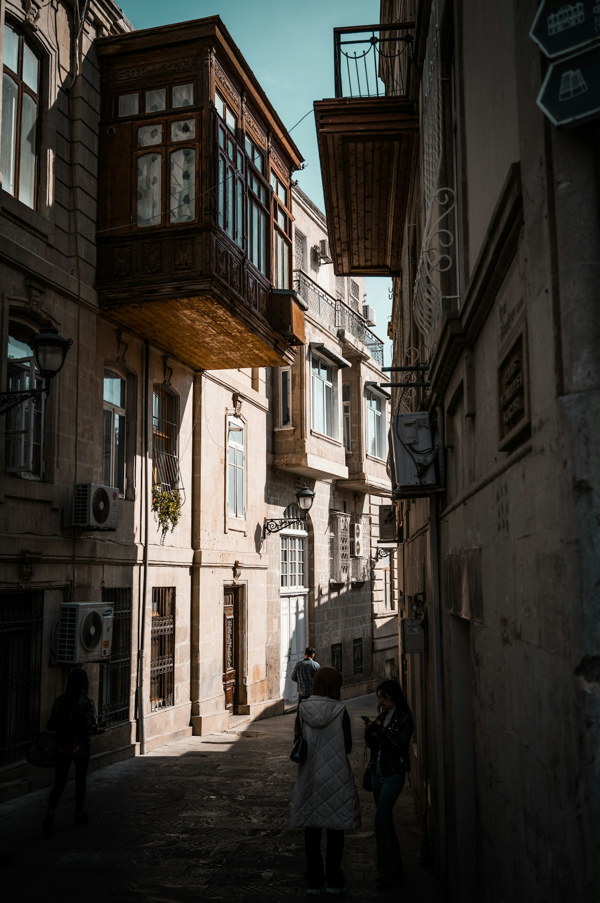

← Все путешествия
Азербайджан / Бутик-тур
Баку
Огни Каспия, старый город и гастрономия — в камерной компании девушек.

Даты8–11 октября 2026
ФорматКамерная группа
НаправлениеБаку, Азербайджан
Город, который хочется разделить
Встречаемся
у Каспия.
Огни города, прогулки по старым улицам и гастрономия — три настроения нашей поездки в Баку. В камерной компании у нового места появляется ещё одно измерение: люди, с которыми вы его открываете.
Хочется пробовать вместе, обсуждать впечатления за столом и продлевать вечер ещё одной прогулкой. Для этого и собираемся.
Едем 8–11 октября 2026 года. Подробную программу уточняйте у организаторов. Перед бронированием пришлём актуальные условия и расскажем, что входит в стоимость.